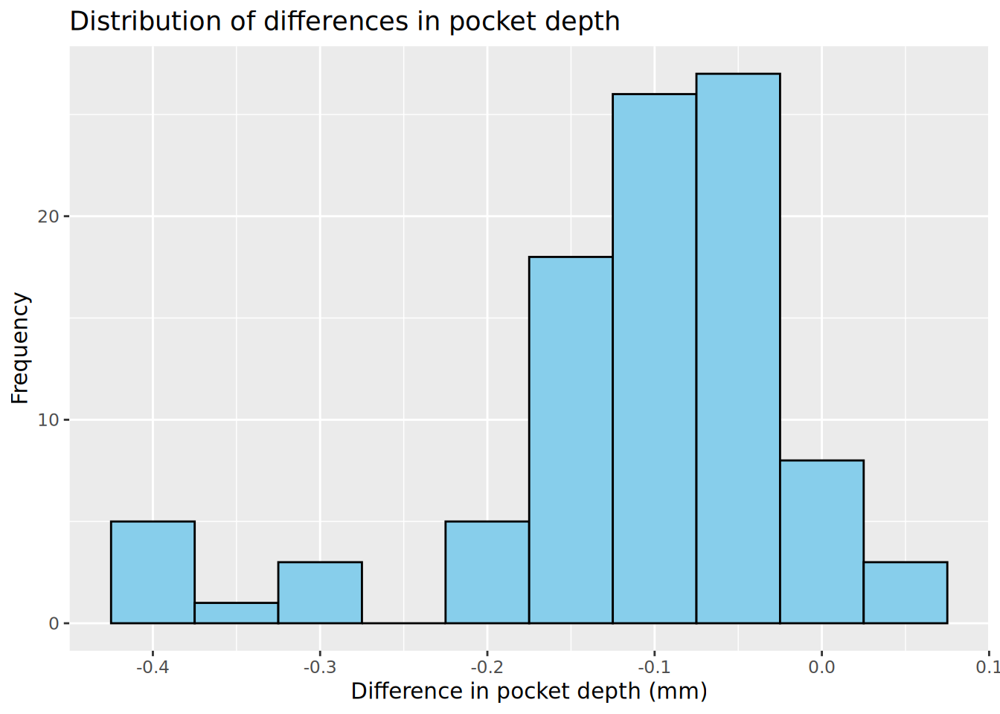

Using the data provided in the table, calculate an approximate 95% confidence interval for the difference in proportions of post-surgical complications between smokers and non-smokers.
TipAnswer question 1
Step 1: Extract the data
Smokers with complications: \(x_1 = 8\), Total smokers: \(n_1 = 20\)
Non-smokers with complications: \(x_2 = 10\), Total non-smokers: \(n_2 = 60\)
The 95% confidence interval is approximately \((-0.001, 0.468)\)
ImportantQuestion 2
Based on the 95% confidence interval, can we conclude that there is a statistically significant difference in the proportion of post-surgical complications between smokers and non-smokers?
TipAnswer question 2
The 95% confidence interval for the difference in proportions is \((-0.001, 0.468)\). Since this interval includes zero, we cannot reject the null hypothesis that the two proportions are equal. Therefore, we do not have sufficient evidence to conclude that there is a statistically significant difference in the proportion of post-surgical complications between smokers and non-smokers.
Results of the two-sample test of proportions based on the normal approximation with continuity correction:
# Create a contingency tablecomplications <-matrix(c(8, 12, 10, 50), nrow =2, byrow =TRUE)colnames(complications) <-c("Complication", "No Complication")rownames(complications) <-c("Smokers", "Non-smokers")complications <-as.table(complications)prop.test(complications)
2-sample test for equality of proportions with continuity correction
data: complications
X-squared = 3.4409, df = 1, p-value = 0.0636
alternative hypothesis: two.sided
95 percent confidence interval:
-0.03449898 0.50116565
sample estimates:
prop 1 prop 2
0.4000000 0.1666667
ImportantQuestion 3
Based on the results of the test, can we conclude that there is a statistically significant difference in the proportion of post-surgical complications between smokers and non-smokers?
TipAnswer question 3
The p-value from the two-sample test of proportions is 0.064. Since this p-value is greater than the significance level of 0.05, we do not have sufficient evidence to reject the null hypothesis. Therefore, we cannot conclude that there is a statistically significant difference in the proportion of post-surgical complications between smokers and non-smokers.
ImportantQuestion 4
In addition to the p-value, output of the prop.test() function also provides an approximate 95% confidence interval for the difference in proportions. How does this confidence interval compare to the one you calculated manually?
TipAnswer question 4
The 95% confidence interval for the difference in proportions was \((-0.001, 0.468)\). This is an approximate interval without continuity correction. The confidence interval provided in the output above is slightly wider due to the continuity correction. Without continuity correction (adjust = FALSE in R), the confidence interval provided by the prop.test() function is the same as the one that was calculated manually. SPSS gave the same result as R.
Checking of assumptions
ImportantExercise
Check this assumption by calculating the expected counts for each cell in the contingency table.
ImportantQuestion 5
Is it reasonable to use the normal approximation in this case?
TipAnswer question 5
The expected counts for each cell in the contingency t able are as follows:
Complication No Complication
Smokers 4.5 15.5
Non-smokers 13.5 46.5
One of the cells in the contingency table has an expected count just below 5, which indicates that the two sample Z-test may not be fully accurate in this case.
Fisher’s exact test
fisher.test(complications)
Fisher's Exact Test for Count Data
data: complications
p-value = 0.05967
alternative hypothesis: true odds ratio is not equal to 1
95 percent confidence interval:
0.9154957 11.7051187
sample estimates:
odds ratio
3.274581
ImportantQuestion 6
Based on the results of Fisher’s exact test, can we conclude that there is a statistically significant difference in the proportion of post-surgical complications between smokers and non-smokers?
TipAnswer question 6
The p-value from Fisher’s exact test is 0.060. Since this p-value is greater than the significance level of 0.05, we do not have sufficient evidence to reject the null hypothesis. Therefore, we cannot conclude that there is a statistically significant difference in the proportion of post-surgical complications between smokers and non-smokers.
Based on the results of the chi-square test, can we conclude that the distribution of vaccine side effects is consistent across the three age groups?
TipAnswer question 7
The p-value from the chi-square test of homogeneity is <0.0001. Since this p-value is less than the significance level of 0.05, we have sufficient evidence to reject the null hypothesis. Therefore, we can conclude that the distribution of vaccine side effects is not consistent across the three age groups.
Checking of assumptions
ImportantQuestion 8
Are the expected cell counts greater than 5 for the different cells in the contingency table?
Expected cell counts:
# Retrieve the table of expected countschisq_test_overall$expected
# Adjust the p-value for multiple testingp_adjusted_23 <-3*chisq_test_23$p.value
The Bonferroni-corrected p-value for this comparison is 0.072.
ImportantQuestion 9
Based on the results of the pairwise comparisons, which age groups have significantly different distributions of side effects?
TipAnswer question 9
Based on the adjusted p-values from the pairwise comparisons, we can conclude that the distributions of side effects are significantly different between the age groups 18–39 and 60+ (Bonferroni-corrected p-value < 0.001). However, there were no significant differences between the age groups 40–59 and 60+ (Bonferroni-corrected p-value = 0.072) or between the age groups 18–39 and 40–59 (Bonferroni-corrected p-value = 0.206).
Paired t-test
data: pockets$pocket_depth_before and pockets$pocket_depth_after
t = 11.133, df = 95, p-value < 2.2e-16
alternative hypothesis: true mean difference is not equal to 0
95 percent confidence interval:
0.09140772 0.13108091
sample estimates:
mean difference
0.1112443
ImportantQuestion 10
Based on the results of the paired t-test, can we conclude that the intervention significantly reduces pocket depth?
TipAnswer question 10
The p-value from the paired t-test is <0.0001, which is less than the significance level of 0.05. Therefore, we have sufficient evidence to reject the null hypothesis and conclude that the intervention significantly reduces pocket depth.
Checking of assumptions
# Calculate the differences in pocket depthpockets$diff <- pockets$pocket_depth_after - pockets$pocket_depth_before# Create a histogram of the differenceslibrary(ggplot2)ggplot(pockets, aes(x = diff)) +geom_histogram(binwidth =0.05,fill ="skyblue",color ="black") +labs(title ="Distribution of differences in pocket depth",x ="Difference in pocket depth (mm)",y ="Frequency")

ImportantQuestion 11
Based on the histogram, do the differences in pocket depth appear to be approximately normally distributed?
TipAnswer question 11
The histogram of the differences in pocket depth is left-skewed, indicating that the distribution is not normal and that we may therefore be better of using a sign test.
Sign test
# Perform the sign test# There are 7 positive signs out of 96 pairs with either a positive or negative signsign_test <-binom.test(7, 96, p =0.5)print(sign_test)
Exact binomial test
data: 7 and 96
number of successes = 7, number of trials = 96, p-value < 2.2e-16
alternative hypothesis: true probability of success is not equal to 0.5
95 percent confidence interval:
0.02981784 0.14447971
sample estimates:
probability of success
0.07291667
ImportantQuestion 12
Based on the results of the sign test, can we conclude that the intervention significantly reduces pocket depth?
TipAnswer question 12
The p-value from the sign test is <0.0001, which is less than the significance level of 0.05. Therefore, we have sufficient evidence to reject the null hypothesis and conclude that the intervention significantly reduces pocket depth.
Wilcoxon signed-rank test
# Perform the Wilcoxon signed-rank testwilcox_test <-wilcox.test(pockets$pocket_depth_before, pockets$pocket_depth_after,paired =TRUE)print(wilcox_test)
Wilcoxon signed rank test with continuity correction
data: pockets$pocket_depth_before and pockets$pocket_depth_after
V = 4572, p-value = 2.435e-16
alternative hypothesis: true location shift is not equal to 0
ImportantQuestion 13
Based on the results of the Wilcoxon signed-rank test, can we conclude that the intervention significantly reduces pocket depth?
TipAnswer question 13
The p-value from the Wilcoxon signed-rank test is <0.0001, which is less than the significance level of 0.05. Therefore, we have sufficient evidence to reject the null hypothesis and conclude that the intervention significantly reduces pocket depth.
Part 3: Analysis of paired dichotomous data
# Create the table for DNCB and Croton Oil responsesskin_response_table <-matrix(c(81, 23, 48, 21), nrow =2, byrow =TRUE)colnames(skin_response_table) <-c("DNCB +ve", "DNCB -ve")rownames(skin_response_table) <-c("Croton Oil +ve", "Croton Oil -ve")skin_response_table <-as.table(skin_response_table)# Print the tableskin_response_table
# Perform the McNemar testmcnemar_test <-mcnemar.test(skin_response_table)print(mcnemar_test)
McNemar's Chi-squared test with continuity correction
data: skin_response_table
McNemar's chi-squared = 8.1127, df = 1, p-value = 0.004396
ImportantQuestion 14
Based on the results of the McNemar test, can we conclude that there is a significant difference in the proportions of patients with a negative response to DNCB and croton oil? If so, can you determine which substance is associated with a higher proportion of negative responses?
TipAnswer question 14
The p-value from the McNemar test is 0.0044, which is less than the significance level of 0.05. Therefore, we have sufficient evidence to reject the null hypothesis and conclude that there is a significant difference in the proportions of patients with a negative response to DNCB and croton oil. The test does not provide information on which substance is associated with a higher proportion of negative responses. To address this question, we can calculate the estimated proportion of negative responses for each substance, which is \(44/173 = 0.25\) for DNCB and \(69/173 = 0.40\) for croton oil. Therefore, croton oil is associated with a higher proportion of negative responses.